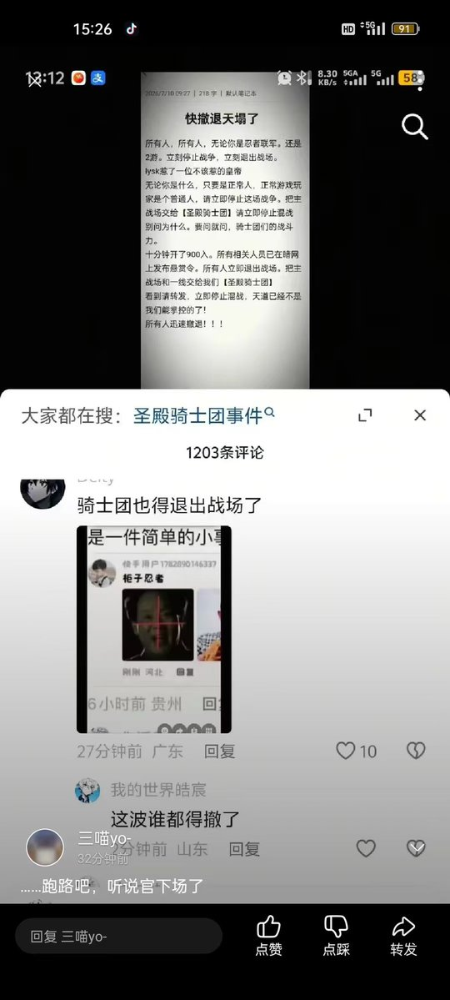
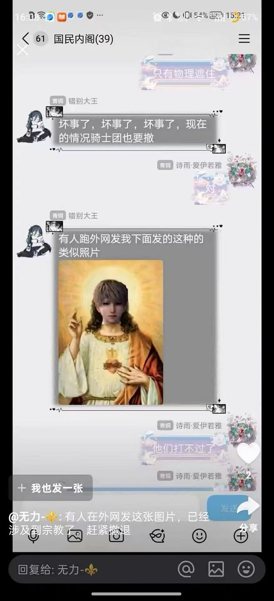
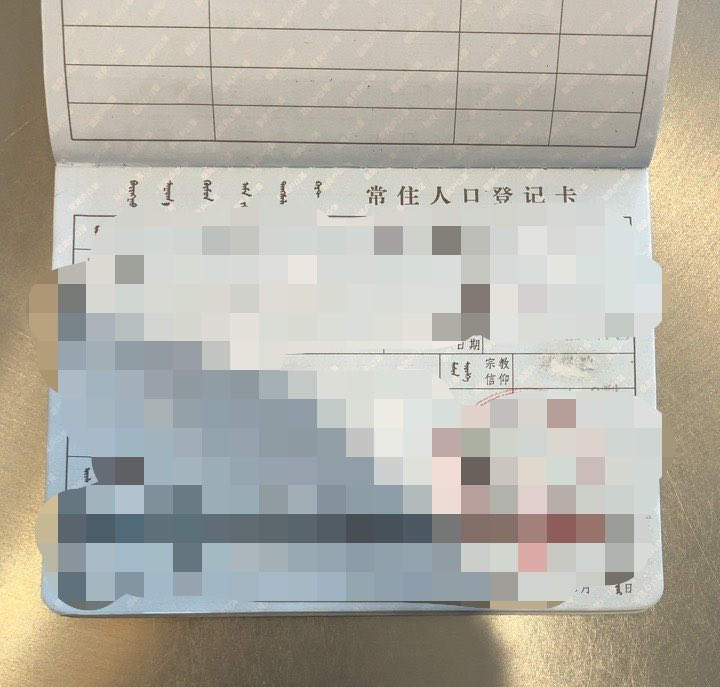

我又看到后续了。《恋与深空》粉丝与初音未来骑士团的冲突中，有人做了涉及毛泽东相关政治内容的图，还有把LADS角色头部P到上帝圣像上的图片。
我即是中国人，也是基督徒（虽然只是名义上的），看到这些确实觉得有些过线。政治和宗教红线还是别碰为好。
不过我还能继续参战（乐）。#恋与深空 #初音未来
また続報を見つけました。『恋と深空』ファンと初音未来騎士団の対立で、毛沢東関連の政治的内容の画像や、LADSキャラの頭を神様像に合成したものが登場。
私は中国人でありキリスト教徒ですが、これらは少し越線気味だと思います。政治と宗教の線は越えない方が無難です。
とはいえ私もまだ参戦できます（笑）。#恋と深空 #初音ミク
I saw more follow-up on this. In the Love and Deepspace vs Hatsune Miku Knights conflict, there are edits involving Mao Zedong-related political content and one with a LADS character’s head photoshopped onto a God/Jesus holy image.
As a Chinese person and a Christian myself, I feel these cross some lines. Better not to touch political or religious red lines.
That said, I can still keep watching (or participating). #LoveAndDeepspace #HatsuneMiku

我即是中国人，也是基督徒（虽然只是名义上的），看到这些确实觉得有些过线。政治和宗教红线还是别碰为好。
不过我还能继续参战（乐）。#恋与深空 #初音未来
また続報を見つけました。『恋と深空』ファンと初音未来騎士団の対立で、毛沢東関連の政治的内容の画像や、LADSキャラの頭を神様像に合成したものが登場。
私は中国人でありキリスト教徒ですが、これらは少し越線気味だと思います。政治と宗教の線は越えない方が無難です。
とはいえ私もまだ参戦できます（笑）。#恋と深空 #初音ミク
I saw more follow-up on this. In the Love and Deepspace vs Hatsune Miku Knights conflict, there are edits involving Mao Zedong-related political content and one with a LADS character’s head photoshopped onto a God/Jesus holy image.
As a Chinese person and a Christian myself, I feel these cross some lines. Better not to touch political or religious red lines.
That said, I can still keep watching (or participating). #LoveAndDeepspace #HatsuneMiku



最近《恋与深空》部分粉丝用AI生成男主×初音未来CP图，称“很般配”，并侮辱初音、粉丝及东方Project等角色，还攻击其他二次元社群（如FGO、原神等）。呼吁全球受影响的二次元粉丝群体保持注意。LADS社群此前已有毒性争议。更多讨论可在B站、小红书搜索“恋与深空 初音”查看。#恋与深空 #初音未来 https://t.co/uANFuIpdNx